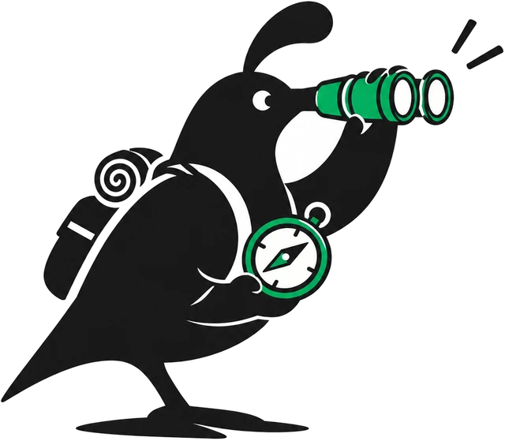
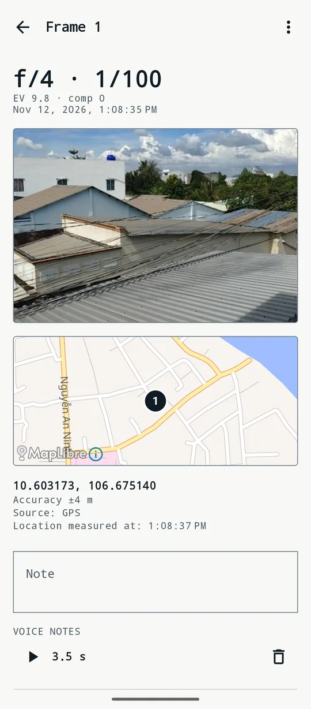
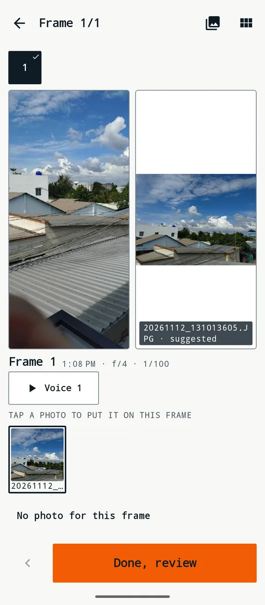
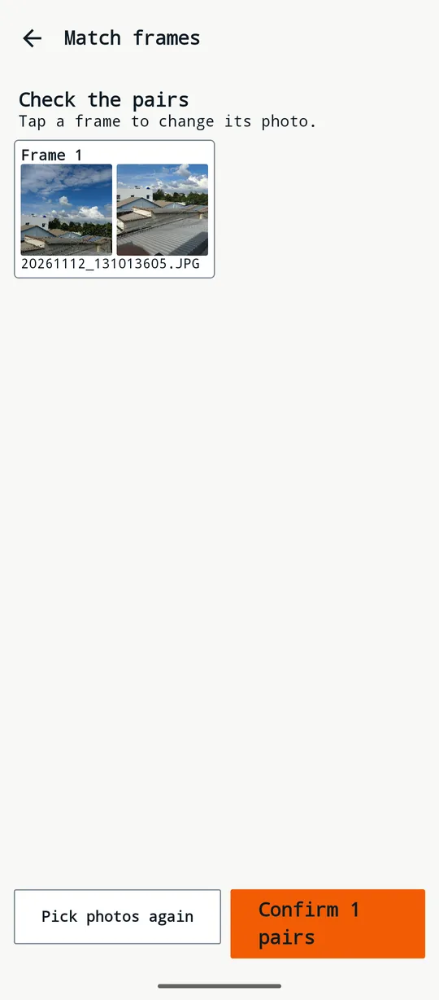
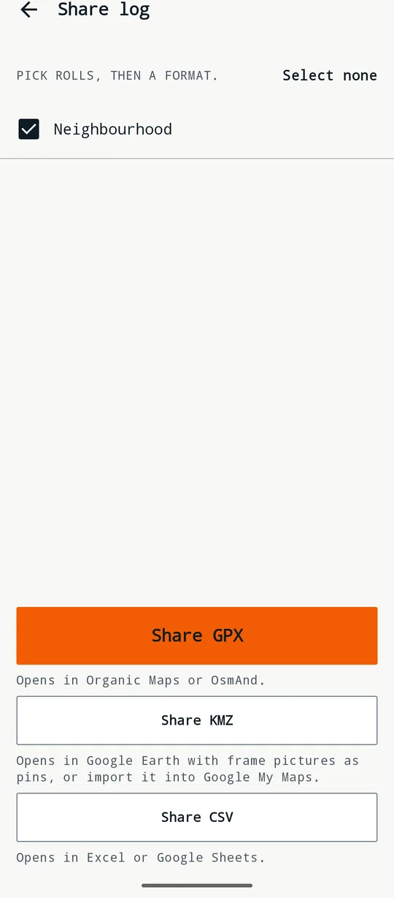
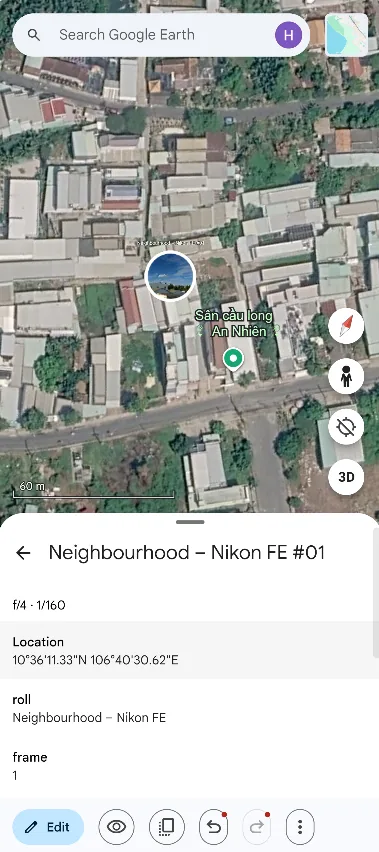

光を測る
スマホの照度センサーを使い、入射光式露出計のように被写体に当たる光を測ります。
- 絞り優先・シャッター優先、露出補正
- ISO はフィルムから設定
- 信頼できる露出計に合わせて端末ごとに校正
FilmTrail は光を測り、シャッターを切ったあとワンタップで各コマの撮影場所を記録します。スキャンが届いたら、その位置をファイルに書き込みます。
メールアプリが開きます。公開日に一度だけ返信し、それ以外は送りません。宛先： filmwanderer.support@

スマホの照度センサーを使い、入射光式露出計のように被写体に当たる光を測ります。

シャッターを切ったらすぐワンタップ。時刻、GPS 位置、使った露出を残します。


音声メモと参考写真を手がかりに、スキャンしたファイルを1コマずつ選びます。

すべてのコマをサムネイル付きで地図に表示。ピンをタップすると写真とコマの詳細が見られます。


ロールの記録を、ほかの地図アプリや表計算ソフトで開ける形式で共有。撮った場所で各コマを見返せます。
はい。FilmTrail は無料で、広告もアプリ内課金もありません。
はい。測光、記録、照合は通信なしで動きます。地図の背景だけはインターネットが必要で、オフのままにもできます。
35mm でも中判でも、どのフィルムカメラでも。FilmTrail はカメラとは通信せず、撮影ごとにスマホをタップします。
今のところ対応していません。FilmTrail は Android 専用です（Android 8.0 以降）。アプリ自体は英語とベトナム語です。
FilmTrail はテスト中です。メールを一通送っていただければ、Google Play で公開された日に一度だけ返信します。
メールアプリが開きます。公開日に一度だけ返信し、それ以外は送りません。宛先： filmwanderer.support@